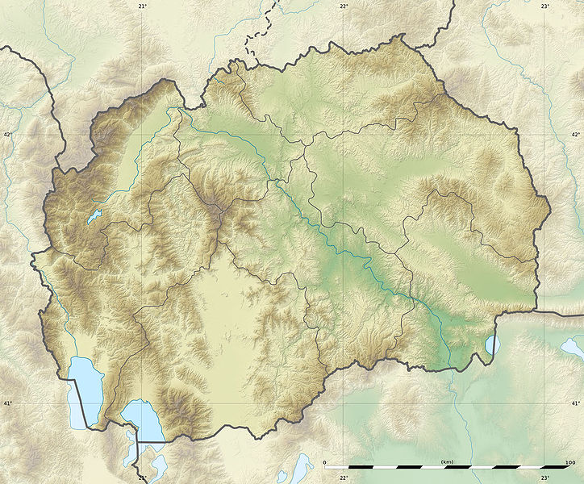

Драчево — населба во Општина Кисела Вода, во градот Скопје со 19.246 жители. Поради својата големина и бројот на жители Драчево е прераснато во градска населба на градот Скопје. Сепак, административно и статистички Драчево сè уште се дели на село и населба.
